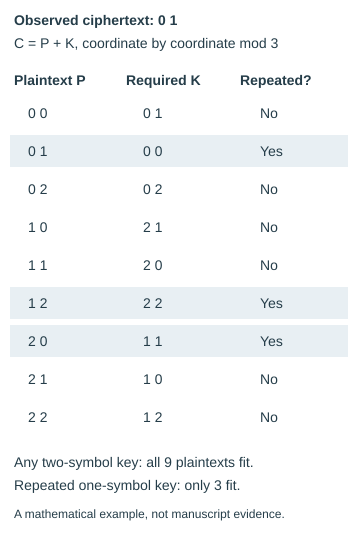

One-time pads, short seeds and what statistics can establish
A worked finite example separates uniform symbols from independent keys, and explains why fitted keys or failed searches do not identify a one-time pad.
On this page
A flat frequency distribution, a high entropy estimate and an unsuccessful key search answer different questions. None by itself identifies how a key was generated. To assess a one-time-pad claim, separate the observed ciphertext, the proposed encryption rule and the distribution of allowed keys.
What a one-time-pad claim requires
For a fixed-length message of n rune indices, consider Cᵢ = Pᵢ + Kᵢ mod 29. If K is selected uniformly from all 29ⁿ possible keys, independently of P, then each plaintext gives every ciphertext the same probability. For any fixed P and C there is exactly one matching key: Kᵢ = Cᵢ − Pᵢ mod 29. Its probability is 29⁻ⁿ, regardless of P.
This is the fixed-length additive example of perfect secrecy: observing the ciphertext does not change the plaintext probabilities. The underlying definition is in Shannon’s Communication Theory of Secrecy Systems. It concerns a specified probabilistic system, not a visual property of a particular ciphertext. The key must remain secret and must not be reused across messages; length and any unencrypted formatting can still be visible.
Fitting a key is not finding the key
If an arbitrary full-length additive key is permitted, every same-length candidate plaintext has a matching key obtained by subtraction. Producing a readable plaintext and its fitted key therefore does not distinguish that plaintext from alternatives. The useful evidence would be an independently specified way to obtain the key, or a prediction that succeeds on material not used to construct it. See candidate readings and search space and bounds.
Uniform symbols can still reveal a relationship
Use a three-symbol alphabet, indices 0, 1 and 2, and two-symbol messages. With all nine two-symbol keys equally likely, each plaintext can produce all nine ciphertexts equally often. Now allow only the three repeated keys 00, 11 and 22, again equally likely. For each fixed plaintext, either ciphertext position is still uniform over 0, 1 and 2 when the key is sampled. But the two positions are conditionally dependent: knowing one fixes the other for that plaintext.
Subtract the first ciphertext symbol from the second: C₁ − C₀ = (P₁ + k) − (P₀ + k) = P₁ − P₀ mod 3. The repeated key cancels. The ciphertext reveals the plaintext difference exactly, even though either position viewed alone is uniform.

0 1. All nine plaintexts fit an unrestricted key; only the three shaded rows fit a repeated key. Labels carry the distinction without relying on color. Download figure.This example distinguishes uniform marginal distributions—the distribution at either position—from independence between positions. It does not claim that the manuscript uses repeated keys. Likewise, single-rune empirical entropy summarizes observed counts and cannot establish the joint distribution of an unknown generator.
A long stream need not contain a long secret
A deterministic generator with b secret seed bits and otherwise fixed public settings produces at most 2ᵇ distinct streams, even when each stream is much longer. Collisions can make that number smaller. For a fixed ciphertext, this gives at most that many plaintext candidates under the specified additive rule. When 2ᵇ < 29ⁿ, this family cannot cover all possible n-symbol keys. Its long output does not supply the key uncertainty of n independent uniform runes.
This counting distinction does not make seed recovery easy. The generator may be difficult to distinguish from independent randomness with practical computation, the seed range may be enormous, or the assumed generator may be wrong. An external book or file is also not automatically a one-time pad: external location says nothing by itself about uniformity, independence, secrecy or reuse.
What statistical tests and searches can establish
NIST’s statistical-test guidance explicitly separates statistical testing from cryptanalysis: passing a battery does not certify a generator. Here, a finite set of measurements can constrain the models actually tested, but it cannot establish an unrestricted claim about the source of the key.
| Observation | Supported conclusion | Still unresolved |
|---|---|---|
| No candidate succeeds in a fixed seed dictionary. | No accepted result under that generator, dictionary, alignment and acceptance rule. | Other seeds, other generators, decoder failure, and whether the true plaintext would pass the scorer. |
| The known planted key recovers the planted text. | The method works for that control and its assumptions. | Recovery power for different encoders, languages or lengths. |
| Two constructions look alike under the chosen measurements. | Those measurements did not separate those samples. | Equality of the generating distributions or security against other analyses. |
The bounded-search controls compare missing-key and included-key cases. The decoder controls show how a correct key can fail under the wrong alignment rules, and the scorer controls separate score acceptance from plaintext language. Together they help diagnose a failed search without turning it into an impossibility claim.
Reproduce the finite example
python scripts/pad_identification_example.pyThe standard-library script enumerates all 81 plaintext/key pairs in the two-symbol example. It checks the nine-ciphertext uniform distribution for every plaintext, verifies both coordinate marginals for repeated keys, and checks the difference invariant. A separate enumeration of matching keys checks the subtraction-derived rows. This is an exhaustive mathematical illustration, not a manuscript experiment or a new cryptographic result. Download script · Download exact rows.
Test a short-seed search with known text
A guessed opening can match several seeds without identifying the intended one. Our known-crib seed experiment uses synthetic ciphertexts and reserves the text after the opening for verification. It tests included and omitted seeds, the wrong generator and an incorrect first crib rune. All two-rune searches retain multiple candidates; only the true generating pairs predict the entire withheld continuation.
The experiment makes the bounds explicit: two specified hash generators, 4,096 seeds each and exact alignment. Its omitted-seed controls show why an empty dictionary search does not exclude the generator itself. It does not identify the generator used by Liber Primus.